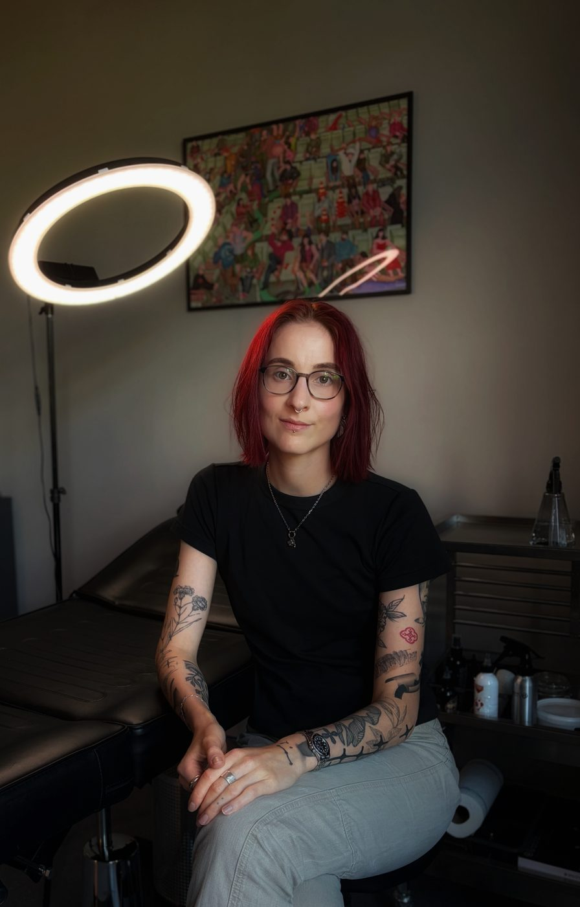

About
Hi, ich bin Emmely.
Ich bin 29, lebe in Leipzig und tätowiere seit 2018. Angefangen habe ich damals ohne Maschine. Obwohl Handpoke eine langwierige Technik ist, oder vielleicht gerade deshalb, habe ich sie für mich lieben gelernt und schätze die Ergebnisse bis heute sehr.
In letzter Zeit zieht es mich immer stärker zu großen, dunklen, geometrischen Motiven, und dafür greife ich inzwischen öfter zur Maschine.
Meine ersten Tattoos sind bei mir zu Hause entstanden. Nach einer Zwischenstation tätowiere ich seit Anfang 2025 in meinem eigenen kleinen Studio im Leipziger Westen - ein Schritt, über den ich mich immer noch sehr freue.
Hauptberuflich arbeite ich Vollzeit in der IT-Security. Das Tätowieren ist mein kreativer Ausgleich dazu, und ich bin sehr dankbar, dass ich mir diesen Teil erhalten konnte (und anders kann ich es mir gar nicht mehr vorstellen).
I'm 29, I live in Leipzig and I have been tattooing since 2018. Back then I started out without a machine. Handpoke is a slow technique - or maybe that is exactly why I came to love it, and I still value the results it gives.
Lately I have been drawn more and more to large, dark, geometric work, and for that I increasingly reach for the machine.
My first tattoos were made at home. After one stop in between, I have been tattooing in my own small studio in the west of Leipzig since the beginning of 2025 - a step I am still very happy about.
My day job is full time in IT security. Tattooing is my creative counterweight to that, and I am very grateful that I have been able to keep this part of my life (and I couldn't imagine it any other way now).
